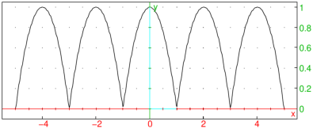

8.2.2 Finding a period of an expression
The period command finds a period of
a given periodic expression.
-
period takes one mandatory argument and one optional argument:
-
expr, an expression f(x) where x∈ℝ.
- Optionally, x, a real variable (by default x).
- period(expr ⟨,x ⟩)
returns a (not necessarily the smallest) period of f or
+∞ if f is not periodic.
Note that +∞ is also returned if period is unable to find a period.
For periodic functions with arbitrary small periods, such as constant functions,
zero is returned.
- period is able to detect periodicity of functions built from
the basic periodic functions ga(x)=eiax (which covers for the
standard trigonometric functions by Euler’s formula) and/or functions
returned by the periodic command (see Section 8.2.1).
Remark.
If periodic returns zero for an expression f(x), it does not always mean that
f is constant. For example, f(x)=⌊ x−⌊ x−1⌋⌋ is always
equal to 1 because 1≤ x−⌊ x−1⌋<2, but
g(x)=⌈ x−⌊ x−1⌋⌉ is not constant by the same argument
(for x∈ℤ, g(x) is equal to 1, and for x∉ℤ its value is 2).
However, periodic returns zero for both functions, as it is unable to
detect changes in isolated points.
Examples
To define and display a square wave, you can enter:
| sw:=sign(sin(pi*x)):;
plot(sw,x) |

You observe that the period is equal to 2. Indeed:
Any rational function with periodic variables is periodic if
the variable periods are commeasurable (i.e. if the quotient of any two periods
is a rational number). Also, if f is periodic, then g∘ f is periodic for
any function g. For example, define two periodic functions f and g with periods 2 and 3,
respectively, and then the function h(x)=f(x)g(x)/ln(1+f(x)2+g(x)4):
| f:=periodic(x^2,x=0..1):;
g:=periodic(x^3,x=-1..1):;
h:=f*g/ln(1+f^2+g^4):;
plot(h) |
The above graph indicates that h is possibly periodic; indeed, its period is equal to 6, which
is the least common multiple of the periods of f and g.
A function built from periodic functions with periods which are not commeasurable is not
periodic. For example, f(x)=sin(x)+sin(π x) is not periodic:
| period(sin(x)+sin(pi*x),x) |
Often (but generally not), the smallest period is returned,
such as for the function f(x)=sin2 x, for instance.